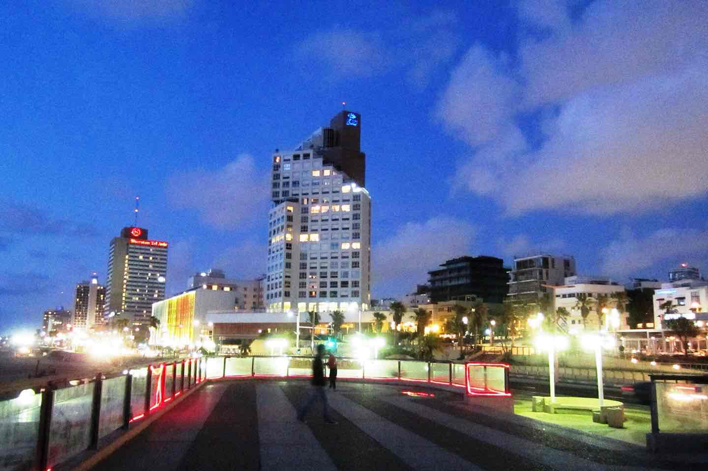

מניינים · תל אביב
עב
EN
ד׳ באלול תשפ״ו · פרשת כי תצא
שקיעה
19:21
המניין הבא לידך
מנחה
כ־6 דק׳ הליכה
19:01
בעוד {{heroLeft}} דק׳
שקיעה פחות 20 דק׳
לכלל ישראל
אליהו חכים 5, רמת אביב
צילום: Martin Furtschegger · Wikimedia Commons · CC BY 3.0
רמת אביב
שנה מיקום
מנחה
שחרית
ערבית
שבת
כל הנוסחים
אשכנז
עדות המזרח
תימני
8 בתי כנסת · לפי המניין הבא
היכל חיים
אופנהיימר 5 · כ־6 דק׳
19:06
מנחה
עדות המזרח
נבדק 12.8.26
אוניברסיטת תל אביב · צימבליסטה
חיים לבנון 42 · כ־11 דק׳
13:55
מנחה
אשכנז
נבדק 3.8.26
תהילת אביב
שרגא פרידמן 1 · כ־14 דק׳
13:00
מנחה
עדות המזרח
נבדק 12.8.26
הרמב״ם
ברודצקי 19 · כ־9 דק׳
בזמן — שעה טרם פורסמה
עדות המזרח
יודעים את השעה? עדכנו
כל הזמנים מחושבים לפי מיקום בית הכנסת, ומתעדכנים מדי יום עם השקיעה.
זמן לא ידוע מוצג כלא ידוע — לעולם לא ננחש.